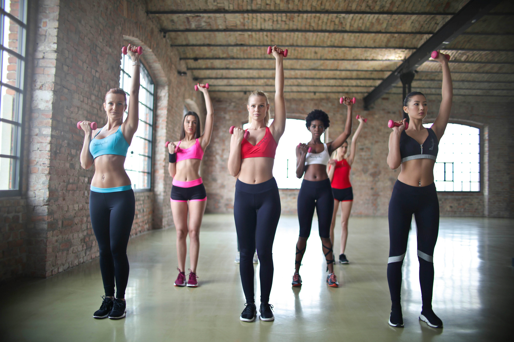

💪 GYM TONIC
Gymnastique dynamique et énergisante pour rester en forme

Description
Gymnastique dynamique et énergisante pour rester en forme ! Cours collectifs toniques mêlant renforcement musculaire, cardio et étirements dans une ambiance motivante.
👥 Public
Adultes
🕒 Horaires
Deux créneaux disponibles :
- Mardi : 19h15 à 20h15
- Mercredi : 17h30 à 19h00
📍 Lieu
Mardi : Salle Pierre Combettes (HAUT)
Mercredi : Salle Pierre Combettes (BAS)
💰 Tarifs
Cotisation annuelle :
- Mardi : 160 € + adhésion (15 €)
- Mercredi : 190 € + adhésion (15 €)
📅 Démarrage
Mardi : 09 septembre 2025
Mercredi : 10 septembre 2025
📞 Contact
Animatrice :
Colette SOLIVERES
Référente Foyer Rural :
Roselyne NACACHIAN
📞 06 32 65 67 76
⚠️ Important
Certificat médical obligatoire
💪 Objectifs
Amélioration de la condition physique générale, renforcement musculaire et bien-être dans un esprit de groupe convivial.